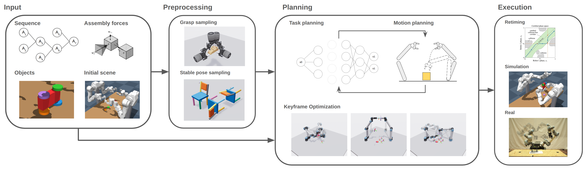
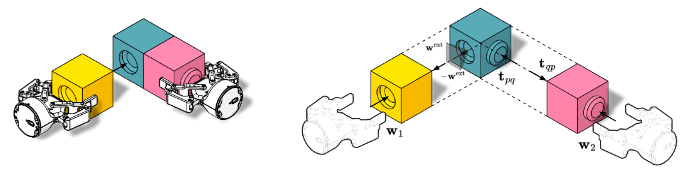

Assembly using robots often requires specially designed fixtures, or relies on top-down only assembly strategies. Using multiple robots, we can avoid using fixtures and make robotic assembly more flexible. Planning assembly sequences for multiple robots is challenging due to the high number of possible task assignments and orders. In addition, we need to reason over forces that occur during the assembly process, e.g., to decide if multiple robots are required for support, or if external support such as a table should be used.
We present Wʀᴀᴘ, a multi-robot assembly planner for multi-part assemblies, given the inter-part ordering-dependencies, the part meshes, and their initial state. We formulate a linear program to reason about valid grasps for supporting the forces that occur during assembly. The search leverages the assembly sequence, and greedily finds a feasible solution per assembly step by computing a heuristic via a cheap backwards search, and using the heuristic in the more expensive forward search.
We then solve the multi-robot, multi-goal motion planning problem, and for execution, we split the plan into contact-rich assembly skills, and free space motion. We benchmark the planner on a variety of multi-part assemblies, and apply the planner to groups of robots differing in size and kinematics.
Imagine building a lego set: You get an instruction booklet that tells ou the order in which you need to assemble the parts that you got, but it does not tell you how to grasp a piece, or how to bring the pieces to the desired goal location in the required orientation, or how to apply the force needed. In this example, we often use our hands, or the table as support of a sub-assembly for the forces of pushing parts together: We do not have a specific fixture in which we place the objects for assembly.
Informally, this is what we are trying to get robots to do. However, robots without dexterous hands are severly limited in how they can reorient objects, and thus need to do it via handovers, or repeatedly setting the objects down, and regrasping.
We formulate this problem as a search-problem where we try to find the multi-robot sequence that achieves the full assembly at its end. In this search problem, we need to figure out how to balance the forces that are happening in the assembly steps, we need to deal with the branching of the search from the many pick and place transformations, and we need to find a motion plan at the end.
To achieve this, Wʀᴀᴘ combines:
We give a brief description of parts of the system below:

The core idea of the search is that we want to leverage information from assembly, and from disassembly of the object. First, in the high level loop, we choose one of the possible next steps from the inter-part dependencies that we are given.
We then try to find a feasible robot action sequence to fulfill this one goal. The actions we are considering are pick, place, handover, add_grasp, remove_grasp, and assemble. We also support a 'reorient' action, but do not use that in this work.
In the backward search, we compute a heuristic that we use in the forward search. We do that by running a search from all possible goal states that have the parts that we want to assemble in this current search. The search proceeds by applying the actions backwards, i.e. 'pick' becomes 'place', 'handover' stays 'handover', but the direction changes, etc.
We do not blindly just apply the backwards actions, but we do some filtering with cheap validity checks:

In the forward search, we leverage the heuristic that we computed in the backward search. Here, we check if we can actually satisfy the constraints that the actions impose, e.g., grasping an object with a robot in a specific way, or handing an object over betweeen two robots.
We do this using an optimization based solver, which we initialize with an analytic solution whenever possible.
Once a valid task sequence was found, we first co-optimize all robot configurations using dynamic programming, and then compute a motion plan for our multi-goal, multi-robot, multi-mode planning problem using a bidirectional RRT. We retime this to make the plan dynamically feasible for the robots, and insert the controllers for the manipulation steps and then run it either in simulation, or on the real robot system.
We show our planner on two OpenArms, and on UR5es. We vary the team size from 2 to 4 robots, and demonstrate planing of 11 different objects, including comparisons to objects from Fabrica. We do not rely on a specific mating primitive, and show both linear insertion, and a screw-connection.
Below, there is a 3D viewer to display a selection of plans, which are replays from the physics simulator.
Fabrica car assembly with four UR robots. Click Load assets to download the interactive replay.
@inproceedings{hartmann2027fixtureless,
title = {{WRAP}: Fixtureless Wrench-aware Multi-Robot Assembly Planning},
author = {Hartmann, Valentin N. and Su, Huang and Huang, Yijiang and Coros, Stelian},
}